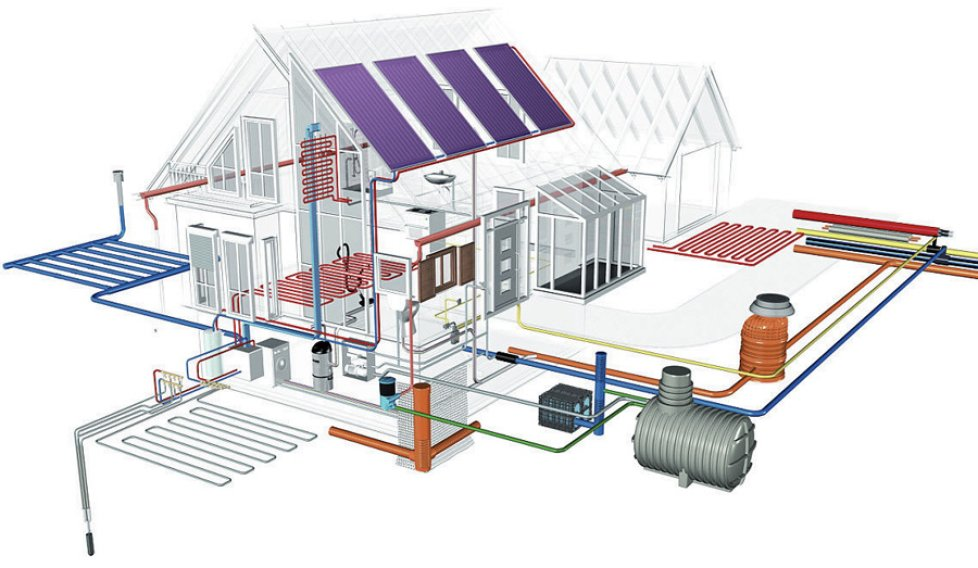
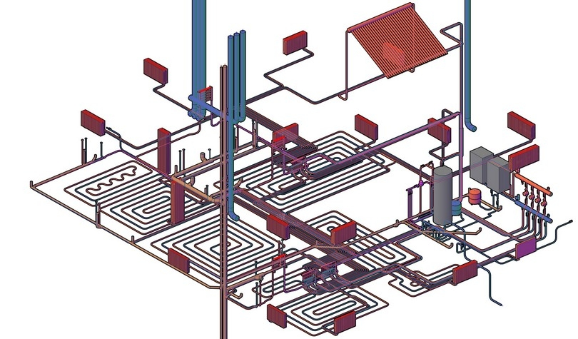

Проектування інженерних систем - важливий етап будівництва будь-якого об’єкта, включаючи спорудження житлового, громадського, промислового, складського призначення.
На сьогодні існує велика кількість шахраїв і недобросовісних фірм, які, користуючись недостатньою поінформованістю людей, здирають величезні гроші за неіснуючі і непотрібні послуги. Ми готові запропонувати вашій увазі перелік послуг, які є обов’язковими, і несемо повну відповідальність за їх достовірність і якість.
Інженерні системи є основою інфраструктури кожного об’єкта, тому їх проектування - процес не менш важливий, ніж архітектурний проект. Тому слід попередньо підготувати плани інженерних мереж, це позволяє вирішити наступні задачі:
Перелік внутрішніх інженерних систем будівель досить широкий:
Порядок проектування інженерних систем зазвичай строго визначений: починають роботи з створення проектів систем опалення, вентиляції, водопостачання і каналізації, закінчують - проектуванням систем електропостачання та ІТП.
Помилки при проектуванні внутрішніх мереж можуть істотно вплинути на ефективність функціонування всієї споруди. Так, незалежна розробка проектів різних комунікаційних систем може привести до серйозних проектних прорахунків. Наприклад, значні габарити інженерного обладнання приведуть до істотного скорочення робочої площі приміщень, стелі через нагромадження комунікаційних мереж у верхній частині приміщень виявляться низькими, а помилки у виборі системи кондиціонування можуть стати причиною невиправдано високої вартості експлуатації (наприклад, при використанні чиллер-фанкойлів в невеликих будинках).
Одним з найпопулярніших і інноваційних напрямків на сьогоднішній день є "зелені технології" в інженерних системах. В їх основі лежить використання природних джерел енергії, екологічних матеріалів та ін. На Заході все частіше при будівництві використовуються енергоефективні технології, які є більш екологічні, а також дозволяють істотно знизити витрати на енергію при експлуатації будівлі. Наприклад, серед новітніх напрямів можна назвати наступні: